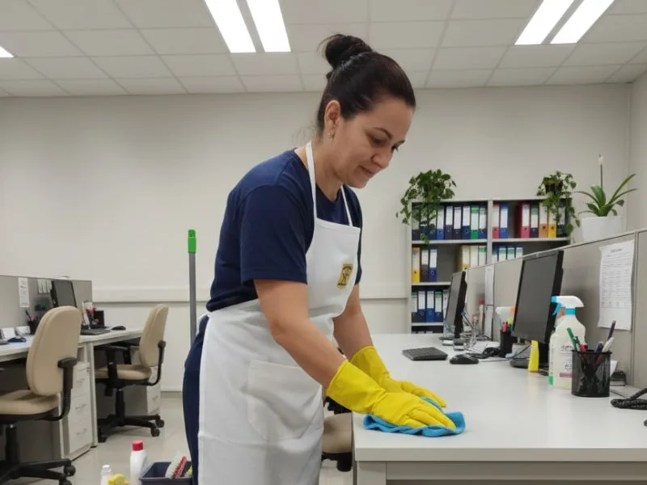
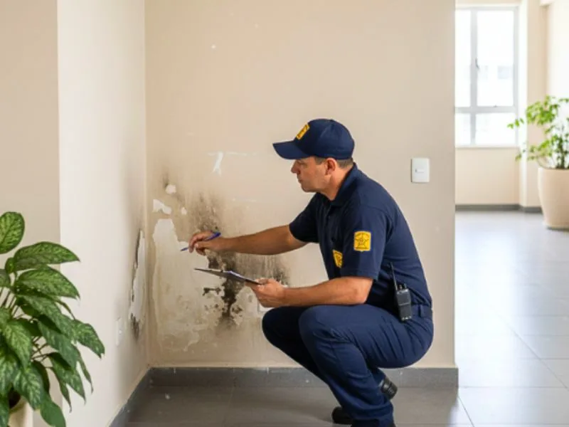
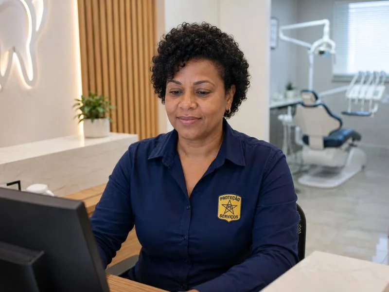
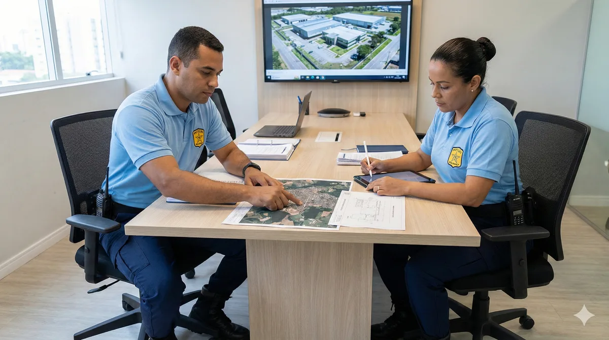
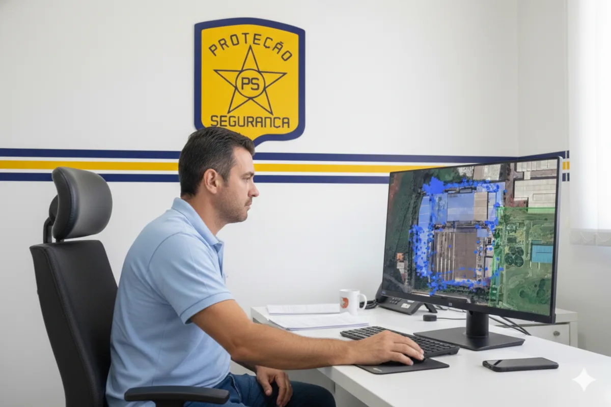
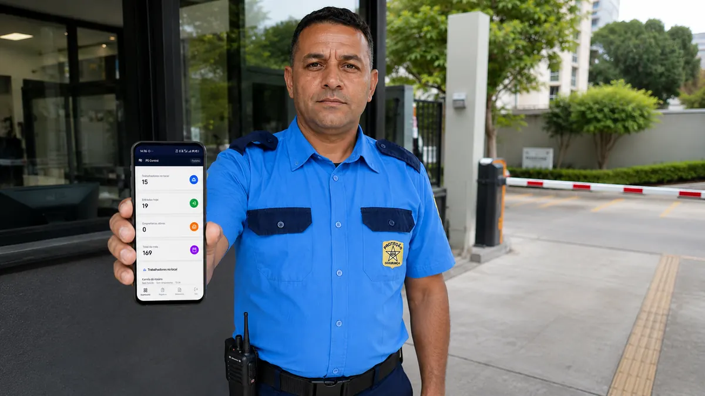
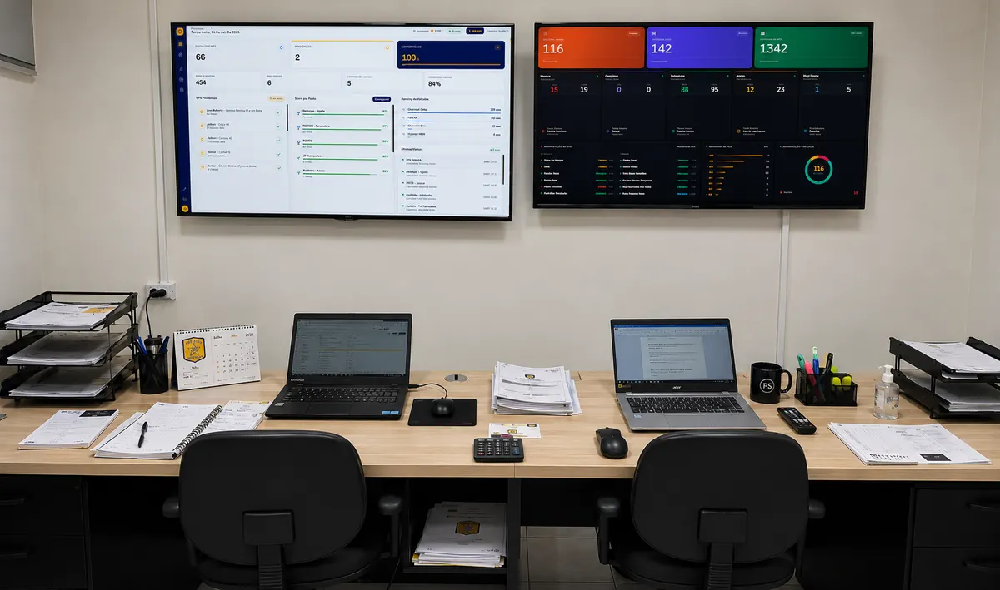
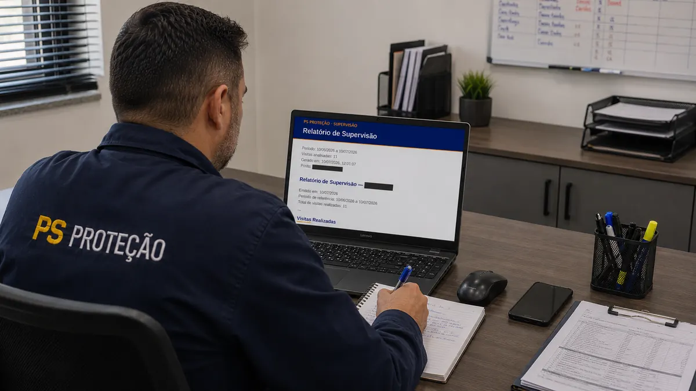
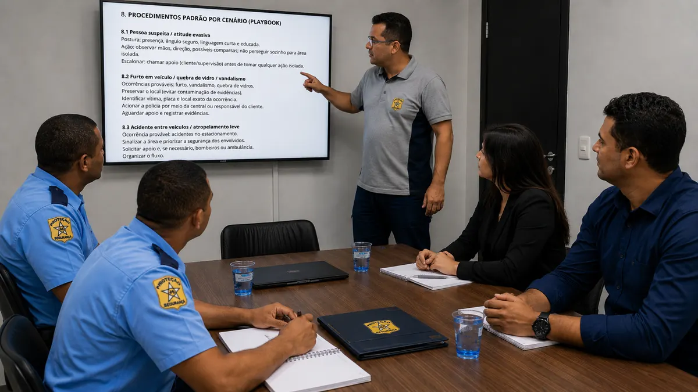

Portaria e Controle de Acesso
Profissionais treinados para gestão de acesso, controle de visitantes e procedimentos padronizados de entrada e saída.
Ver serviçoExperiência, processo e excelência em cada detalhe: soluções terceirizadas em Facilities para empresas que exigem resultado, organização e confiança.
Colaboradores Treinados por Nós
Clientes Atendidos
Anos de Experiência no Mercado
Supervisão Ativa com Relatórios
Prover soluções de Facilities que garantam organização, qualidade e continuidade operacional para empresas que exigem resultado — com profissionalismo, supervisão ativa e comprometimento total.
Ser a empresa de Facilities mais confiável da Região Metropolitana de Campinas, reconhecida pela excelência operacional e pelo impacto positivo na operação de cada cliente.
Soluções integradas de Facilities para manter sua empresa funcionando com excelência, organização e continuidade — da portaria e controle de acesso à limpeza e suporte administrativo.
Profissionais treinados para gestão de acesso, controle de visitantes e procedimentos padronizados de entrada e saída.
Ver serviço
LimpezaEquipes especializadas com produtos e técnicas adequadas para manter ambientes impecáveis e bem conservados.
Ver serviço
ZeladoriaSuporte completo para manutenção preventiva, organização das dependências e conservação do patrimônio.
Ver serviçoProfissionais de suporte para otimizar processos internos, organizar documentações e apoiar a gestão operacional.
Ver serviço
RecepçãoRecepcionistas treinados para acolher e atender visitantes com excelência, representando a imagem da sua empresa.
Ver serviçoSuporte nas rotinas contábeis e financeiras, auxiliando na organização de documentos, lançamentos e controles.
Ver serviçoA confiança dos nossos clientes é o nosso maior patrimônio. Veja o que gestores e líderes dizem sobre a PS Proteção.
"A PS Proteção transformou completamente a gestão de portaria da nossa planta industrial. Os profissionais são bem treinados, pontuais e seguem os procedimentos à risca. A supervisão periódica nos dá total segurança sobre a operação."
"Trabalhamos com a PS Proteção há mais de 5 anos em nosso grupo educacional. A equipe de limpeza mantém todas as unidades impecáveis e o suporte de recepção representa muito bem nossa instituição. Parceria de altíssima qualidade."
"Nosso centro de distribuição exige rigor operacional 24h. A PS Proteção entrega com excelência: relatórios pontuais, supervisão constante e equipe sempre pronta para reposição em caso de ausências. Recomendo sem hesitação."
Cada posto da PS Proteção é implantado com processo técnico estruturado, supervisão contínua e melhoria constante — garantindo resultados desde o primeiro dia.


Realizamos uma análise do ambiente, fluxos de acesso, pontos críticos e necessidades operacionais, definindo o escopo adequado para o local.
Selecionamos profissionais conforme o perfil da operação, com treinamento, uniformização e definição das rotinas de trabalho e procedimentos do posto.
Acompanhamento periódico com supervisores, verificação de postura, rotinas, cumprimento de horários e apoio aos colaboradores em campo.

Registro de ocorrências, ajustes operacionais e alinhamentos com o cliente para manter a operação eficiente, organizada e compatível com as necessidades do local.
Ferramentas e processos que já operam nos postos de serviço da PS Proteção. Clique em um item para ver como funciona na prática.
App próprio para registro de entrada e saída de visitantes, prestadores de serviço e moradores. Cada posto de serviço tem regras de acesso configuradas conforme o perfil da instalação, e o histórico de movimentação fica disponível para consulta do cliente a qualquer momento.

A supervisão começa em campo: supervisores da própria PS Proteção visitam presencial e periodicamente cada posto, verificando postura, uniforme, escala e cumprimento do POP. Os dados registrados nessas visitas passam por uma segunda camada — a equipe interna de bancada, que reavalia cada ocorrência e decide as próximas ações: envio de novos uniformes e EPIs, contato direto com o supervisor de campo ou acionamento do cliente quando necessário.

Documento entregue mensalmente ao cliente reunindo ocorrências registradas no período, resultado das visitas de supervisão, indicadores de assiduidade da equipe e recomendações de ajuste operacional quando necessário.

Cada operação nova é implantada com Procedimento Operacional Padrão (POP) específico para o posto de serviço e Acordo de Nível de Serviço (SLA) definido em contrato, formalizando prazos de resposta, escopo de atividades e critérios de qualidade.

Dispositivo embarcado no equipamento do vigia ou porteiro que emite disparos sonoros e vibratórios em intervalos aleatórios ao longo do turno, exigindo confirmação de que o profissional está acordado e no posto. Cada resposta é registrada com horário, tempo de reação e localização no momento da confirmação. Se o alerta não for desativado dentro do prazo, a central de monitoramento recebe um aviso automático de ausência ou falha de resposta — permitindo intervenção imediata antes que o posto fique desguarnecido.
A PS Proteção trabalha com estrutura operacional e processos definidos para garantir que o posto de serviço funcione com estabilidade, organização e suporte contínuo ao cliente.
Equipe de apoio preparada para reposições rápidas, evitando interrupções no posto de serviço.
Acompanhamento da equipe em campo com verificação de rotinas, postura e cumprimento dos procedimentos.
Cada posto é estruturado com rotinas definidas no Procedimento Operacional Padrão, garantindo padronização.
Canal direto com a equipe administrativa e supervisão para resolução de ocorrências e ajustes na operação.
A operação é adaptada conforme o perfil do local, fluxos de acesso e demandas específicas do contratante.
Com mais de 28 anos de atuação no mercado de Facilities, a PS Proteção é referência em soluções de portaria, limpeza, zeladoria e suporte administrativo na Região Metropolitana de Campinas.
Atendemos empresas de todos os portes com estrutura operacional sólida, equipe altamente qualificada e processos definidos que garantem organização, qualidade e continuidade em cada posto de serviço.
Nossa metodologia de implantação técnica, aliada à supervisão ativa e relatórios periódicos, assegura que cada cliente receba o padrão de excelência que caracteriza a PS Proteção há décadas.
Tire suas principais dúvidas sobre os serviços e processos da PS Proteção.
Nossa implantação segue 4 etapas: diagnóstico do posto, dimensionamento e seleção da equipe, treinamento com POP (Procedimento Operacional Padrão) e início das operações com supervisão intensiva. Todo o processo é acompanhado por nossa equipe técnica.
Atendemos Americana, Campinas e toda a Região Metropolitana de Campinas, incluindo Sumaré, Hortolândia, Paulínia, Valinhos, Vinhedo, Indaiatuba, Santa Bárbara d'Oeste, Nova Odessa, Limeira, Piracicaba e mais de 30 municípios da região.
Sim. Contamos com equipe de reserva operacional para garantir a cobertura imediata de faltas e ausências, assegurando que o posto de serviço nunca fique sem atendimento. Essa é uma das nossas principais garantias de continuidade operacional.
Realizamos supervisões periódicas em campo, verificação de rotinas, postura e cumprimento de procedimentos. Além disso, geramos relatórios regulares e mantemos canal direto com o cliente para alinhamentos e ajustes na operação.
A documentação necessária depende do tipo e escopo do serviço. Nossa equipe comercial orienta todo o processo de contratação de forma clara e ágil. Entre em contato para iniciar um diagnóstico gratuito das suas necessidades.
Absolutamente. Cada operação é estruturada com base nas necessidades específicas do cliente — fluxo de acesso, horários, perfil das instalações e demandas particulares. Desenvolvemos um POP personalizado para cada posto de serviço.
Atendemos em mais de 60 municípios na Região Metropolitana de Campinas e interior paulista — onde sua empresa estiver, a PS Proteção chega.
Fale com nossa equipe comercial e receba uma proposta personalizada para as necessidades da sua operação. Sem compromisso.